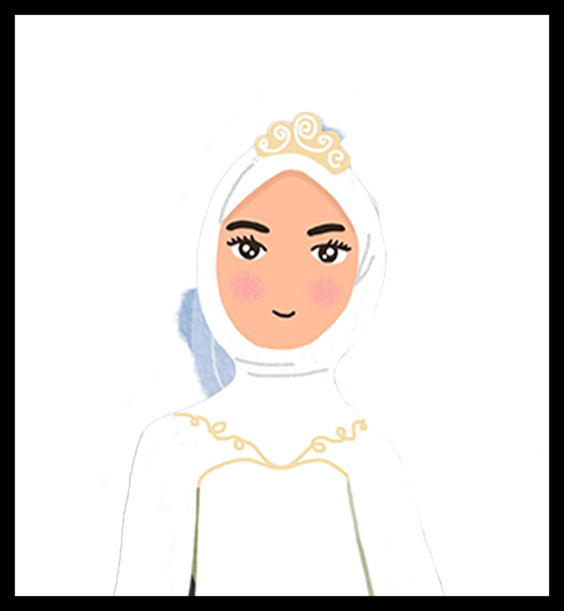
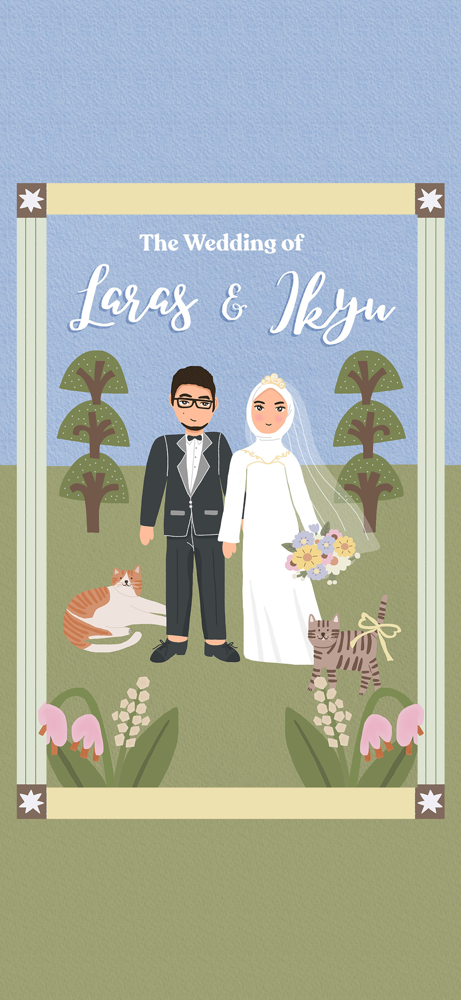

Annisa Larasati
Putri kedua dari Alfian Noor dan Sri Widjayanti

Kepada Yth; Tamu Undangan
QS. Ar-Rum 21
Dan di antara tanda-tanda (kebesaran)-Nya ialah Dia menciptakan pasangan-pasangan untukmu dari jenismu sendiri, agar kamu cenderung dan merasa tenteram kepadanya, dan Dia menjadikan di antaramu rasa kasih dan sayang. Sungguh, pada yang demikian itu benar-benar terdapat tanda-tanda bagi kaum yang berpikir.

Annisa Larasati
Putri kedua dari Alfian Noor dan Sri Widjayanti
Muhammad Ikyu Arqie Ramadhan
Putra pertama dari Ir. Gunawan dan Dr. Harti Budi Yanti SE, AK, Msi
Sabtu, 27 Juni 2026 Akad Nikah: 07.00 WIB Resepsi Pernikahan: 10.00 - 13.00 WIB
Add to CalendarBallroom Ijen Suites Resort & Convention
Jl. Ijen Nirwana Raya Blok A no. 16, Malang
Petunjuk ke lokasiHadiah terbaik bagi kami adalah kehadiran dan doa restu Anda. Kehangatan kebersamaan di hari bahagia kami sudah lebih dari cukup.
Doa Untuk Pengantin
“BAARAKALLAAHU LAKA WA BAARAKA ‘ALAIKA WA JAMA’A BAINAKUMAA FII KHAIRIN”
(Semoga Allah memberkahimu dan senantiasa memberkahimu, dan mengumpulkan kalian berdua dalam kebaikan) (HR. Ahmad)